Recurrent events
Klaus Holst & Thomas Scheike
2026-05-24
Source:vignettes/recurrent-events.Rmd
recurrent-events.RmdOverview
For recurrent events data it is often of interest to compute basic descriptive quantities to gain some understanding of the phenomenon being studied. We demonstrate how to compute:
- the marginal mean
- AUC and logrank test for comparison of marginal means (also for special case with cumulative incidence)
- efficient marginal mean estimation with fast computation of standard errors
- the Ghosh-Lin Cox type regression for the marginal mean, possibly
with composite outcomes.
- efficient regression augmentation of the Ghosh-Lin model
- clusters can be specified
- allows a stratified baseline
- the variance of a recurrent events process
- the probability of exceeding k events
- the two-stage recurrent events random effects model
In addition several tools can be used for simulating recurrent events and bivariate recurrent events data, also with a possible terminating event:
- recurrent events with multiple
- event types
- Cox type rates
- with a terminal event with possibly multiple causes of death
- Cox type rates
- frailty extensions
- the Ghosh-Lin model when the survival rate is on Cox form.
- frailty extensions
- The general illness death model with Cox models for all hazards.
Simulation of recurrent events
We start by simulating some recurrent events data with two event types having cumulative hazards
- \Lambda_1(t) (rate among survivors)
- \Lambda_2(t) (rate among survivors)
- \Lambda_D(t)
where types 1 and 2 are considered and the terminal event rate is given by \Lambda_D(t). The events are independent by default, but a random effects structure can also be specified to generate dependence.
When simulating data, various random effects structures can be imposed to generate dependence:
Dependence=0: The intensities are independent.
-
Dependence=1: One gamma-distributed random effect Z. The intensities are
- Z \lambda_1(t)
- Z \lambda_2(t)
- Z \lambda_D(t)
-
Dependence=4: One gamma-distributed random effect Z. The intensities are
- Z \lambda_1(t)
- Z \lambda_2(t)
- \lambda_D(t)
-
Dependence=2: Normally distributed random effects Z_1,Z_2,Z_d with variance (
var.z) and correlation (cor.mat) that can be specified. The intensities are- \exp(Z_1) \lambda_1(t)
- \exp(Z_2) \lambda_2(t)
- \exp(Z_3) \lambda_D(t)
-
Dependence=3: Gamma-distributed random effects Z_1,Z_2,Z_d where the sum structure can be specified via a matrix
cor.mat. We compute \tilde Z_j = \sum_k Z_k^{cor.mat(j,k)} for j=1,2,3. The intensities are- \tilde Z_1 \lambda_1(t)
- \tilde Z_2 \lambda_2(t)
- \tilde Z_3 \lambda_D(t)
We return to how to run the different set-ups later and start by simulating independent processes.
The key simulation functions are:
-
sim_recurrent: simple simulation with one event type and death -
sim_recurrentII: extended version with possibly multiple types of recurrent events (rates can be zero); allows Cox-type rates with subject-specific effects -
sim_recurrent_list: lists allowed for multiple event types and causes of death (competing risks); allows Cox-type rates with subject-specific effects -
sim_recurrent: simulates from Cox-Cox (marginals) or Ghosh-Lin-Cox models
Data can also be simulated from the Ghosh-Lin model where marginal rates among survivors are on Cox form:
-
simGLcox(alsosimRecurrentCox): simulates from the Ghosh-Lin model- with frailties, where the survival model for the terminal event is on Cox form
- simulates data where rates among survivors are on Cox form, with or without frailties
see examples below for specific models.
Utility functions
Two utility functions worth noting:
-
tie.breaker: breaks ties among jump times, which is expected by the functions below. -
count_history: counts the number of previous jumps for each subject, i.e. N_1(t-) and N_2(t-).
Marginal Mean
We start by estimating the marginal mean E(N_1(t \wedge D)) where D is the time of the terminal event. The marginal mean is the average number of events observed before time t.
This is based on a two-rate model for
- the type 1 events: E(dN_1(t) | D > t)
- the terminal event: E(dN_d(t) | D > t)
and is defined as \mu_1(t)=E(N_1(t)) \begin{align} \int_0^t S(u) d R_1(u) \end{align} where S(t)=P(D \geq t) and dR_1(t) = E(dN_1(t) | D > t)
and can therefore be estimated by a
- Kaplan-Meier estimator, \hat S(u)
- Nelson-Aalen estimator for R_1(t)
\begin{align} \hat R_1(t) & = \sum_i \int_0^t \frac{1}{Y_\bullet (s)} dN_{1i}(s) \end{align} where Y_{\bullet}(t)= \sum_i Y_i(t) such that the estimator is \begin{align} \hat \mu_1(t) & = \int_0^t \hat S(u) d\hat R_1(u), \end{align} see Cook & Lawless (1997) and Ghosh & Lin (2000).
The variance can be estimated based on the asymptotic expansion of \hat \mu_1(t) - \mu_1(t) \begin{align*} & \sum_i \int_0^t \frac{S(s)}{\pi(s)} dM_{i1} - \mu_1(t) \int_0^t \frac{1}{\pi(s)} dM_i^d + \int_0^t \frac{\mu_1(s) }{\pi(s)} dM_i^d, \end{align*}
with mean-zero processes
- M_i^d(t) = N_i^D(t)- \int_0^t Y_i(s) d \Lambda^D(s),
- M_{i1}(t) = N_{i1}(t) - \int_0^t Y_{i}(s) dR_1(s).
as described in Ghosh & Lin (2000).
Generating data
We start by generating some data to illustrate the computation of the marginal mean
data(CPH_HPN_CRBSI)
dr <- CPH_HPN_CRBSI$terminal
base1 <- CPH_HPN_CRBSI$crbsi
base4 <- CPH_HPN_CRBSI$mechanical
rr <- sim_recurrent(400,base1,death.cumhaz=dr)
rr$x <- rnorm(nrow(rr))
rr$strata <- floor((rr$id-0.01)/100)
dlist(rr,.~id| id %in% c(1,7,9))
#> id: 1
#> entry time status dtime fdeath death start stop x strata
#> 1 0.0 451.1 1 3291 1 0 0.0 451.1 -0.39707 0
#> 401 451.1 485.6 1 3291 1 0 451.1 485.6 -1.04577 0
#> 679 485.6 1276.1 1 3291 1 0 485.6 1276.1 0.09424 0
#> 867 1276.1 1278.8 1 3291 1 0 1276.1 1278.8 2.58113 0
#> 1019 1278.8 1618.3 1 3291 1 0 1278.8 1618.3 0.00696 0
#> 1148 1618.3 1752.9 1 3291 1 0 1618.3 1752.9 -0.81183 0
#> 1256 1752.9 2466.3 1 3291 1 0 1752.9 2466.3 -0.52972 0
#> 1344 2466.3 2550.8 1 3291 1 0 2466.3 2550.8 0.03179 0
#> 1411 2550.8 3290.8 0 3291 1 1 2550.8 3290.8 -0.72717 0
#> ------------------------------------------------------------
#> id: 7
#> entry time status dtime fdeath death start stop x strata
#> 7 0 658.3 0 658.3 1 1 0 658.3 -0.2209 0
#> ------------------------------------------------------------
#> id: 9
#> entry time status dtime fdeath death start stop x strata
#> 9 0.0 433.5 1 505.3 1 0 0.0 433.5 0.3552 0
#> 405 433.5 505.3 0 505.3 1 1 433.5 505.3 0.2355 0The status variable keeps track of the recurrent events and their type, and death the timing of death.
To compute the marginal mean we simply estimate the two rates functions of the number of events of interest and death by using the phreg function (to start without covariates). Then the estimates are combined with standard error computation in the recurrent_marginal function
# to fit non-parametric models with just a baseline
xr <- phreg(Surv(entry,time,status)~cluster(id),data=rr)
xdr <- phreg(Surv(entry,time,death)~cluster(id),data=rr)
par(mfrow=c(1,3))
plot(xdr,se=TRUE)
title(main="death")
plot(xr,se=TRUE)
# robust standard errors
rxr <- robust_phreg(xr,fixbeta=1)
plot(rxr,se=TRUE,robust=TRUE,add=TRUE,col=4)
# marginal mean of expected number of recurrent events
out <- recurrent_marginal(Event(entry,time,status)~cluster(id),data=rr,cause=1,death.code=2)
plot(out,se=TRUE,ylab="marginal mean",col=2)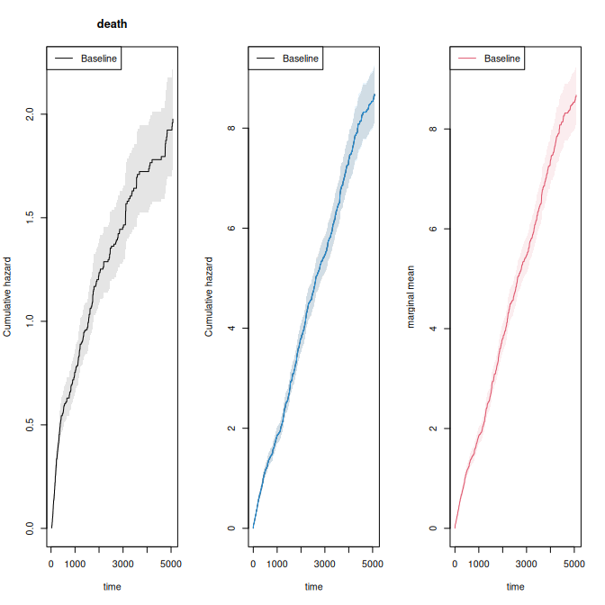
We can also extract the estimate in different time-points
summary(out,times=c(1000,2000))
#> [[1]]
#> new.time mean se CI-2.5% CI-97.5% strata
#> 495 1000 1.857035 0.08767256 1.692911 2.037072 0
#> 779 2000 3.802964 0.14690314 3.525668 4.102068 0The marginal mean can also be estimated in the stratified case:
xr <- phreg(Surv(entry,time,status)~strata(strata)+cluster(id),data=rr)
xdr <- phreg(Surv(entry,time,death)~strata(strata)+cluster(id),data=rr)
par(mfrow=c(1,3))
plot(xdr,se=TRUE)
title(main="death")
plot(xr,se=TRUE)
rxr <- robust_phreg(xr,fixbeta=1)
plot(rxr,se=TRUE,robust=TRUE,add=TRUE,col=1:2)
out <- recurrent_marginal(Event(entry,time,status)~strata(strata)+cluster(id),
data=rr,cause=1,death.code=2)
plot(out,se=TRUE,ylab="marginal mean",col=1:2)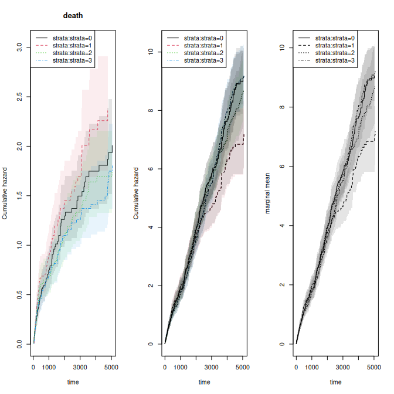
We can compare different marginal mean test (IPCW based) with a log-rank test
test_logrankRecurrent(out)
#> Estimate Std.Err 2.5% 97.5% P-value
#> p1 10.368 14.44 -17.93 38.661 0.47264
#> p2 -22.069 12.43 -46.43 2.288 0.07575
#> p3 2.019 15.72 -28.80 32.838 0.89785
#> ────────────────────────────────────────────────────────────
#> Null Hypothesis:
#> [p1] = 0
#> [p2] = 0
#> [p3] = 0
#>
#> chisq = 3.3471, df = 3, p-value = 0.3411
dd <- test_marginalMean(Event(entry,time,status)~strata(strata)+cluster(id),
data=rr,cause=1,death.code=2)
dd
#> coeffients:
#> p-value
#> time 5079.7045
#> Pepe-Mori NA
#> Ratio-AUC 0.2147
#> Proportionality 0.3865
#> Proportionality-score-test 0.3920
summary(dd)
#> coeffients:
#> p-value
#> time 5079.7045
#> Pepe-Mori NA
#> Ratio-AUC 0.2147
#> Proportionality 0.3865
#> Proportionality-score-test 0.3920
dd$RAUCl
#> n events
#> 400 1184
#>
#> 400 clusters
#> coeffients:
#> Estimate Std.Err 2.5% 97.5% P-value
#> (Intercept) 24707.72 1498.20 21771.30 27644.15 0.0000
#> factor(strata__)strata=1 -3840.23 2028.83 -7816.67 136.20 0.0584
#> factor(strata__)strata=2 -1015.76 2026.74 -4988.10 2956.57 0.6162
#> factor(strata__)strata=3 -351.09 1948.38 -4169.84 3467.66 0.8570The AUC suggest that strata 2 looses 3840 days less than strata 0.
If we adjust for covariates for the two rates we can still do predictions of marginal mean, what can be plotted is the baseline marginal mean, that is for the covariates equal to 0 for both models. Predictions for specific covariates can also be obtained with the recmarg (recurren marginal mean used solely for predictions without standard error computation).
# cox case
xr <- phreg(Surv(entry,time,status)~x+cluster(id),data=rr)
xdr <- phreg(Surv(entry,time,death)~x+cluster(id),data=rr)
par(mfrow=c(1,3))
plot(xdr,se=TRUE)
title(main="death")
plot(xr,se=TRUE)
rxr <- robust_phreg(xr)
plot(rxr,se=TRUE,robust=TRUE,add=TRUE,col=1:2)
out <- recurrentMarginalPhreg(xr,xdr)
plot(out,se=TRUE,ylab="marginal mean",col=1:2)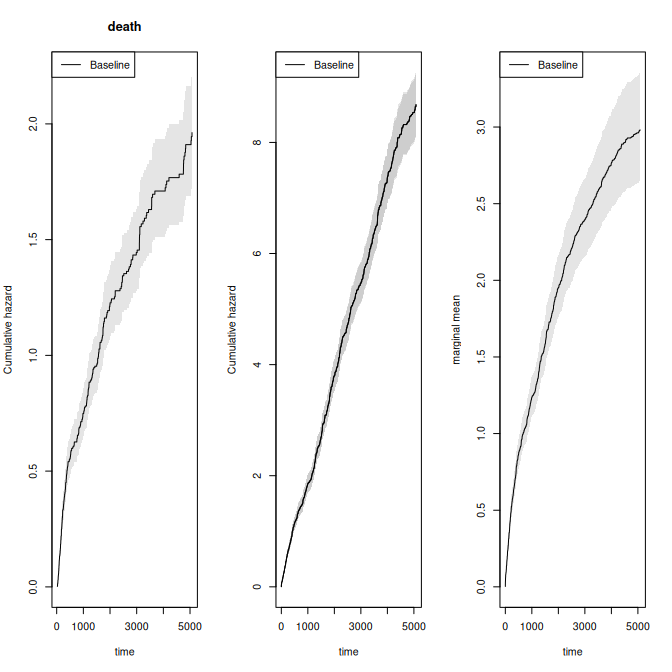
#### predictions witout se's
###outX <- recmarg(xr,dr,Xr=1,Xd=1)
###plot(outX,add=TRUE,col=3)We here simulate multiple recurrent events processes with two causes of death causes and exponential censoring with rate 3/5000, all processes are assumed independent (dependence=0)
rr <- sim_recurrent_list(100,list(base1,base1,base4),death.cumhaz=list(dr,base4),cens=3/5000,dependence=0)
dtable(rr,~status+death,level=2)
#>
#> status
#> death 0 1 2 3
#> 0 37 135 165 12
#> 1 54 0 0 0
#> 2 9 0 0 0
mets:::showfitsimList(rr,list(base1,base1,base4),list(dr,base4))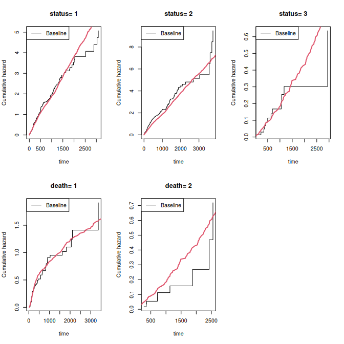
Improving efficiency
To illustrate how the efficiency can be improved using heterogenity in the data, we now simulate some data with strong heterogenity. The dynamic augmentation is a regression on the history for each subject consisting of the specified terms terms: Nt, Nt2 (Nt squared), expNt (exp(-Nt)), NtexpNt (Nt*exp(-Nt)) or by simply specifying these directly. This was developed in Cortese and Scheike (2022).
rr <- sim_recurrentII(200,base1,base4,death.cumhaz=dr,cens=3/5000,dependence=4,var.z=1)
rr <- count_history(rr)
rr <- transform(rr,statusD=status)
rr <- dtransform(rr,statusD=3,death==1)
dtable(rr,~statusD+status+death,level=2,response=1)
#>
#> statusD
#> status 0 1 2 3
#> 0 83 0 0 117
#> 1 0 375 0 0
#> 2 0 0 44 0
#>
#> statusD
#> death 0 1 2 3
#> 0 83 375 44 0
#> 1 0 0 0 117
##xr <- phreg(Surv(start,stop,status==1)~cluster(id),data=rr)
##dr <- phreg(Surv(start,stop,death)~cluster(id),data=rr)
# marginal mean of expected number of recurrent events
out <- recurrent_marginal(Event(start,stop,statusD)~cluster(id),data=rr,cause=1,death.code=3)
times <- 500*(1:10)
recEFF1 <- recurrent_marginalAIPCW(Event(start,stop,statusD)~cluster(id),data=rr,times=times,cens.code=0,
death.code=3,cause=1,augment.model=~Nt)
with( recEFF1, cbind(times,muP,semuP,muPAt,semuPAt,semuPAt/semuP))
#> times muP semuP muPAt semuPAt
#> [1,] 500 0.8744004 0.1059068 0.8670372 0.1055614 0.9967382
#> [2,] 1000 1.2696069 0.1458220 1.2621656 0.1447864 0.9928981
#> [3,] 1500 1.7921498 0.2291966 1.7957473 0.2240253 0.9774373
#> [4,] 2000 2.1216192 0.3047378 2.1595208 0.2937613 0.9639804
#> [5,] 2500 2.4775306 0.3934784 2.5544338 0.3713749 0.9438254
#> [6,] 3000 2.7947412 0.5183678 2.9101041 0.4625630 0.8923451
#> [7,] 3500 3.0289847 0.6033927 3.1307552 0.5193403 0.8607004
#> [8,] 4000 3.3163659 0.7183096 3.3392837 0.5769952 0.8032681
#> [9,] 4500 3.6229966 0.8415333 3.5349425 0.6152266 0.7310781
#> [10,] 5000 3.8810150 0.9255727 3.6777784 0.6159133 0.6654402
times <- 500*(1:10)
###recEFF14 <- recurrent_marginalAIPCW(Event(start,stop,statusD)~cluster(id),data=rr,times=times,cens.code=0,
###death.code=3,cause=1,augment.model=~Nt+Nt2+expNt+NtexpNt)
###with(recEFF14,cbind(times,muP,semuP,muPAt,semuPAt,semuPAt/semuP))
recEFF14 <- recurrent_marginalAIPCW(Event(start,stop,statusD)~cluster(id),data=rr,times=times,cens.code=0,
death.code=3,cause=1,augment.model=~Nt+I(Nt^2)+I(exp(-Nt))+ I( Nt*exp(-Nt)))
with(recEFF14,cbind(times,muP,semuP,muPAt,semuPAt,semuPAt/semuP))
#> times muP semuP muPAt semuPAt
#> [1,] 500 0.8744004 0.1059068 0.8666135 0.1054672 0.9958484
#> [2,] 1000 1.2696069 0.1458220 1.2643398 0.1444958 0.9909053
#> [3,] 1500 1.7921498 0.2291966 1.8063914 0.2218548 0.9679670
#> [4,] 2000 2.1216192 0.3047378 2.1433122 0.2888682 0.9479237
#> [5,] 2500 2.4775306 0.3934784 2.4921659 0.3607250 0.9167593
#> [6,] 3000 2.7947412 0.5183678 2.6962370 0.4264556 0.8226892
#> [7,] 3500 3.0289847 0.6033927 2.7724842 0.4558824 0.7555319
#> [8,] 4000 3.3163659 0.7183096 2.8716708 0.4752409 0.6616101
#> [9,] 4500 3.6229966 0.8415333 2.9362144 0.4519118 0.5370100
#> [10,] 5000 3.8810150 0.9255727 2.9717225 0.3831618 0.4139726
plot(out,se=TRUE,ylab="marginal mean",col=2)
k <- 1
for (t in times) {
ci1 <- c(recEFF1$muPAt[k]-1.96*recEFF1$semuPAt[k],
recEFF1$muPAt[k]+1.96*recEFF1$semuPAt[k])
ci2 <- c(recEFF1$muP[k]-1.96*recEFF1$semuP[k],
recEFF1$muP[k]+1.96*recEFF1$semuP[k])
lines(rep(t,2)-2,ci2,col=2,lty=1,lwd=2)
lines(rep(t,2)+2,ci1,col=1,lty=1,lwd=2)
k <- k+1
}
legend("bottomright",c("Eff-pred"),lty=1,col=c(1,3))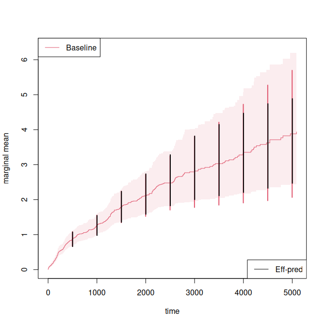
In the case where covariates might be important but we are still interested in the marginal mean we can also augment wrt these covariates
n <- 200
X <- matrix(rbinom(n*2,1,0.5),n,2)
colnames(X) <- paste("X",1:2,sep="")
###
r1 <- exp( X %*% c(0.3,-0.3))
rd <- exp( X %*% c(0.3,-0.3))
rc <- exp( X %*% c(0,0))
fz <- NULL
rr <- mets:::sim_GLcox(n,base1,dr,var.z=0,r1=r1,rd=rd,rc=rc,fz,model="twostage",cens=3/5000)
rr <- cbind(rr,X[rr$id+1,])
dtable(rr,~statusD+status+death,level=2,response=1)
#>
#> statusD
#> status 0 1 3
#> 0 92 0 108
#> 1 0 529 0
#>
#> statusD
#> death 0 1 3
#> 0 92 314 0
#> 1 0 215 108
times <- seq(500,5000,by=500)
recEFF1x <- recurrent_marginalAIPCW(Event(start,stop,statusD)~cluster(id),data=rr,times=times,
cens.code=0,death.code=3,cause=1,augment.model=~X1+X2)
with(recEFF1x, cbind(muP,muPA,muPAt,semuP,semuPA,semuPAt,semuPAt/semuP))
#> muP muPA muPAt semuP semuPA semuPAt
#> [1,] 1.050317 1.052415 1.048871 0.08835005 0.08801111 0.08789822 0.9948859
#> [2,] 1.843830 1.863996 1.838716 0.14730045 0.14606950 0.14556961 0.9882496
#> [3,] 2.714728 2.768829 2.724566 0.24272224 0.23810724 0.23756192 0.9787398
#> [4,] 3.546522 3.636583 3.591319 0.36401457 0.35109326 0.34874650 0.9580564
#> [5,] 4.492684 4.658458 4.537357 0.51416355 0.50043401 0.49610099 0.9648700
#> [6,] 5.080889 5.209681 5.047836 0.60551061 0.58818767 0.58285931 0.9625914
#> [7,] 5.638012 5.701306 5.495962 0.70065049 0.67382134 0.66728557 0.9523801
#> [8,] 6.895109 6.830233 6.447130 0.95745240 0.89622952 0.87919085 0.9182606
#> [9,] 7.723651 6.794796 6.727887 1.15096828 0.99740795 0.96198463 0.8358046
#> [10,] 8.923607 7.170763 7.179372 1.45783461 1.07670415 1.01334938 0.6951059
out <- recurrent_marginal(Event(start,stop,statusD)~cluster(id),data=rr,cause=1,death.code=3)
summary(out,times=times)
#> [[1]]
#> new.time mean se CI-2.5% CI-97.5% strata
#> 181 500 1.050317 0.08835005 0.8906755 1.238572 0
#> 279 1000 1.843830 0.14730045 1.5765935 2.156363 0
#> 355 1500 2.714728 0.24272224 2.2783527 3.234684 0
#> 413 2000 3.546522 0.36401457 2.9002498 4.336805 0
#> 462 2500 4.492684 0.51416355 3.5899669 5.622395 0
#> 480 3000 5.080889 0.60551061 4.0225230 6.417723 0
#> 492 3500 5.638012 0.70065049 4.4192133 7.192950 0
#> 514 4000 6.895109 0.95745240 5.2522287 9.051878 0
#> 523 4500 7.723651 1.15096828 5.7673685 10.343501 0
#> 530 5000 8.923607 1.45783461 6.4785990 12.291356 0Regression models for the marginal mean
One can also do regression modelling , using the model \begin{align*} E(N_1(t) | X) & = \Lambda_0(t) \exp(X^T \beta) \end{align*} then Ghosh-Lin suggested IPCW score equations that are implemented in the recreg function of mets.
First we generate data that from a Ghosh-Lin model with regression coefficients \beta=(-0.3,0.3) and the baseline given by base1, this is done under the assumption that the death rate given covariates is on Cox form with baseline dr:
n <- 100
X <- matrix(rbinom(n*2,1,0.5),n,2)
colnames(X) <- paste("X",1:2,sep="")
###
r1 <- exp( X %*% c(0.3,-0.3))
rd <- exp( X %*% c(0.3,-0.3))
rc <- exp( X %*% c(0,0))
fz <- NULL
rr <- mets:::sim_GLcox(n,base1,dr,var.z=1,r1=r1,rd=rd,rc=rc,fz,cens=1/5000,type=2)
rr <- cbind(rr,X[rr$id+1,])
out <- recreg(Event(start,stop,statusD)~X1+X2+cluster(id),data=rr,cause=1,death.code=3,cens.code=0)
outs <- recreg(Event(start,stop,statusD)~X1+X2+cluster(id),data=rr,cause=1,death.code=3,cens.code=0,
cens.model=~strata(X1,X2))
summary(out)$coef
#> Estimate S.E. dU^-1/2 P-value
#> X1 0.39075785 0.3162028 0.10070725 0.2165394
#> X2 -0.09651179 0.3581337 0.09682266 0.7875562
summary(outs)$coef
#> Estimate S.E. dU^-1/2 P-value
#> X1 0.2122279 0.2946370 0.10162550 0.4713386
#> X2 -0.1576775 0.3523691 0.09699948 0.6545299
## checking baseline
par(mfrow=c(1,1))
plot(out)
plot(outs,add=TRUE,col=2)
lines(scalecumhaz(base1,1),col=3,lwd=2)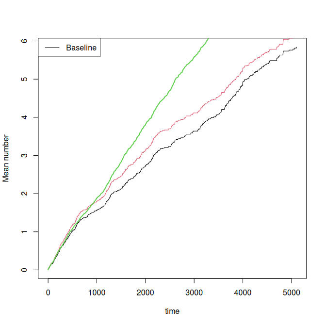
We note that for the extended censoring model we gain a little efficiency and that the estimates are close to the true values.
Also possible to do IPCW regression at fixed time-point
outipcw <- recregIPCW(Event(start,stop,statusD)~X1+X2+cluster(id),data=rr,cause=1,death.code=3,
cens.code=0,times=2000)
outipcws <- recregIPCW(Event(start,stop,statusD)~X1+X2+cluster(id),data=rr,cause=1,death.code=3,
cens.code=0,times=2000,cens.model=~strata(X1,X2))
summary(outipcw)$coef
#> Estimate Std.Err 2.5% 97.5% P-value
#> (Intercept) 1.1590100 0.2775235 0.6150739 1.7029462 2.963428e-05
#> X1 0.2337768 0.2783519 -0.3117830 0.7793365 4.009866e-01
#> X2 -0.2114258 0.2758703 -0.7521217 0.3292701 4.434409e-01
summary(outipcws)$coef
#> Estimate Std.Err 2.5% 97.5% P-value
#> (Intercept) 1.1681460 0.2766323 0.6259567 1.7103353 2.413511e-05
#> X1 0.2312122 0.2785043 -0.3146462 0.7770705 4.064300e-01
#> X2 -0.2321638 0.2747766 -0.7707160 0.3063885 3.981565e-01We can also do the Mao-Lin type composite outcome where we both count the recurrent events (cause 1) and deaths (cause 3) for example \begin{align*} E(N_1(t) + I(D<t,\epsilon=3) | X) & = \Lambda_0(t) \exp(X^T \beta) \end{align*}
out <- recreg(Event(start,stop,statusD)~X1+X2+cluster(id),data=rr,cause=c(1,3),
death.code=3,cens.code=0)
summary(out)$coef
#> Estimate S.E. dU^-1/2 P-value
#> X1 0.3677911 0.2642911 0.09289221 0.1640393
#> X2 -0.1056515 0.2995438 0.08962337 0.7243074This can also be done with competing risks death \begin{align*} E(w_1 N_1(t) + w_2 I(D<t,\epsilon=3) | X) & = \Lambda_0(t) \exp(X^T \beta) \end{align*} and with weights w_1,w_2 that follow the causes, here 1 and 3. We modify the data by changing some of the cause 3 deaths to cause 4
rr$binf <- rbinom(nrow(rr),1,0.5)
rr$statusDC <- rr$statusD
rr <- dtransform(rr,statusDC=4, statusD==3 & binf==0)
rr$weight <- 1
rr <- dtransform(rr,weight=2,statusDC==3)
outC <- recreg(Event(start,stop,statusDC)~X1+X2+cluster(id),data=rr,cause=c(1,3),
death.code=c(3,4),cens.code=0)
summary(outC)$coef
#> Estimate S.E. dU^-1/2 P-value
#> X1 0.40121614 0.2943567 0.09755943 0.1728740
#> X2 -0.09714896 0.3323313 0.09368958 0.7700377
outCW <- recreg(Event(start,stop,statusDC)~X1+X2+cluster(id),data=rr,cause=c(1,3),
death.code=c(3,4),cens.code=0,wcomp=c(1,2))
summary(outCW)$coef
#> Estimate S.E. dU^-1/2 P-value
#> X1 0.41043629 0.2765368 0.09469049 0.1377555
#> X2 -0.09770279 0.3106702 0.09084228 0.7531486
plot(out,ylab="Mean composite")
plot(outC,col=2,add=TRUE)
plot(outCW,col=3,add=TRUE)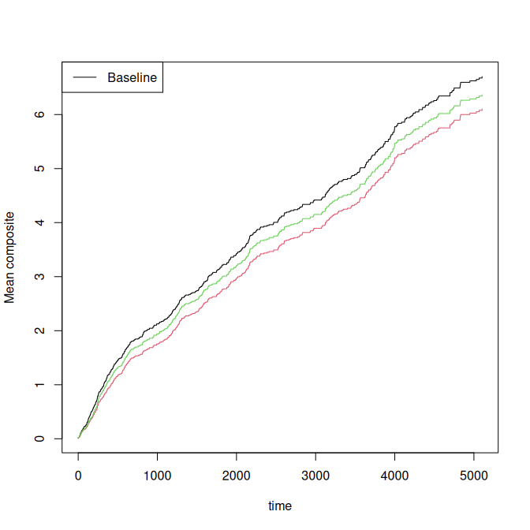
Predictions and standard errors can be computed via the iid decompositions of the baseline and the regression coefficients. We illustrate this for the standard Ghosh-Lin model
out <- recreg(Event(start,stop,statusD)~X1+X2+cluster(id),data=rr,cause=1,death.code=3,cens.code=0)
summary(out)
#>
#> n events
#> 541 441
#>
#> 100 clusters
#> coefficients:
#> Estimate S.E. dU^-1/2 P-value
#> X1 0.390758 0.316203 0.100707 0.2165
#> X2 -0.096512 0.358134 0.096823 0.7876
#>
#> exp(coefficients):
#> Estimate 2.5% 97.5%
#> X1 1.47810 0.79534 2.747
#> X2 0.90800 0.45003 1.832
baseiid <- iidBaseline(out,time=3000)
GLprediid(baseiid,rr[1:5,])
#> pred se-log lower upper
#> [1,] 3.303778 0.2373066 2.074985 5.260253
#> [2,] 3.303778 0.2373066 2.074985 5.260253
#> [3,] 3.303778 0.2373066 2.074985 5.260253
#> [4,] 4.883316 0.2753957 2.846410 8.377841
#> [5,] 4.883316 0.2753957 2.846410 8.377841The Ghosh-Lin model can be made more efficient by the regression augmentation method. First computing the augmentation and then in a second step the augmented estimator (Cortese and Scheike (2023)):
outA <- recreg(Event(start,stop,statusD)~X1+X2+cluster(id),data=rr,cause=1,death.code=3,
cens.code=0,augment.model=~Nt+X1+X2)
summary(outA)$coef
#> Estimate S.E. dU^-1/2 P-value
#> X1 0.16625713 0.2854224 0.09827540 0.5602333
#> X2 -0.06801445 0.3288907 0.09702398 0.8361664We note that the simple augmentation improves the standard errors as expected. The data was generated assuming independence with previous number of events so it would suffice to augment only with the covariates.
Administrative censoring for the Ghosh-Lin model
In the case of administative censoring with possible additional random censorering we can fit the Ghosh-Lin model using risk-set adjustment for the administrative censorering and IPCW adjustment for the random cenouring. We illustrate it using simulated data from the two-stage model described below. The advantage of this procedure is that we do not rely on any modelling assumptions for the administrative censoring that will often be the important part of the total censoring.
library(mets)
rho1 <- 1; rho2 <- 0.5
rate <- c(1,1)
tt <- seq(0, 6, by = 0.01)
base1 <- cbind(tt,rho1 * (1 - exp(-tt/rate[1])))
drcumhaz <- cbind(tt,rho2 * (1 - exp(-tt/rate[2])))
base13 <- cpred(base1,c(1,3))[,2]
dats <- mets:::sim_GLRA(100,base1,drcumhaz,varz=1)
datsA <- dats[[1]]
dtable(datsA,~statusD)
#>
#> statusD
#> 1 3 7
#> 88 35 65
datsRA <- dats[[2]]
dtable(datsRA,~statusD)
#>
#> statusD
#> 0 1 3 7
#> 23 73 32 45We get two data-sets, one with only administrative censoring datsA and one with additional random censoring datsRA.
- datsA: statusD has events (1) death (3) and administrative censorings at the time censorA
- datsRA: statusD has events (1) death (3), administrative censorings (7) and random censorings (0). The time of the administriative censoring is given by censorA
First we deal only with the administriative censoring.
## handling admin censoring with IPCW
outRR <- recreg(Event(start,stop,statusD)~Z1+Z2+cluster(id), datsA, cause = 1,
cens.code = c(7),death.code=3)
estimate(outRR)
#> Estimate Std.Err 2.5% 97.5% P-value
#> Z1 0.2244 0.1918 -0.1515 0.6004 0.2420
#> Z2 -0.2565 0.3637 -0.9694 0.4565 0.4808
## Full Adm-censoring statusA, timeA
out0 <- recreg(Event(start,stop,statusD) ~ Z1 + Z2+cluster(id) , datsA, cause = 1,
cens.code = 9, death.code=3, adm.cens.time=datsA$censorA)
estimate(out0)
#> Estimate Std.Err 2.5% 97.5% P-value
#> Z1 0.2501 0.1930 -0.1283 0.6284 0.1952
#> Z2 -0.1517 0.3636 -0.8642 0.5609 0.6765The additional random censoring can be handled by combining the two censoring times, or by handling the administrative censoring (via risk-set adjustment) and random censoring (via IPCW) separately
## std Right censoring on combined censoring time
outR <- recreg(Event(start,stop,statusD)~Z1 + Z2+cluster(id) , datsRA, cause = 1,
cens.code = c(0,7),death.code=3)
estimate(outR)
#> Estimate Std.Err 2.5% 97.5% P-value
#> Z1 0.3036 0.1724 -0.03434 0.6415 0.07827
#> Z2 -0.2023 0.3457 -0.87997 0.4753 0.55839
## Combined R-IPCW + Adm-censoring status, time
out1 <- recreg(Event(start,stop,statusD) ~ Z1 + Z2+cluster(id) , datsRA, cause = 1,
cens.code = 0, death.code=3, adm.cens.time=datsRA$censorA)
estimate(out1)
#> Estimate Std.Err 2.5% 97.5% P-value
#> Z1 0.3284 0.1732 -0.01105 0.6679 0.05794
#> Z2 -0.1040 0.3418 -0.77397 0.5660 0.76105
## Combined R-IPCW + Adm-censoring status + censoring modelling time
out1c <- recreg(Event(start,stop,statusD) ~ Z1 + Z2+cluster(id) , datsRA, cause = 1,
cens.code = 0, death.code=3, adm.cens.time=datsRA$censorA,cens.model=~strata(Z1,Z2))
estimate(out1c)
#> Estimate Std.Err 2.5% 97.5% P-value
#> Z1 0.3468 0.1741 0.00545 0.6881 0.04645
#> Z2 -0.1024 0.3417 -0.77220 0.5674 0.76440We have influence functions of all parameters and can thus also make predictions with confindence intervals
- this is based on going through a grid of time-points if se=1
- when se=0 the predictions are done for all jump-times
predR0 <- predict(outR,data.frame(Z1=0:1,Z2=0))
plot(predR0,ylim=c(0,1.5))
predR <- predict(outR,data.frame(Z1=0:1,Z2=0),se=1)
plot(predR,se=1,add=TRUE)
pred1c <- predict(out1c,data.frame(Z1=0:1,Z2=0),se=1)
plot(pred1c,se=1,add=TRUE)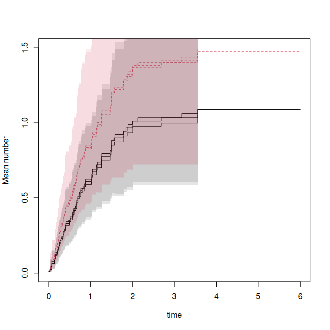
The censoring weights for the random censoring and the combined censoring
km07 <- km(Event(start,stop,statusD %in% c(0,7))~strata(Z1,Z2),datsRA)
km0 <- km(Event(start,stop,statusD==0)~strata(Z1,Z2),datsRA)
plot(km07,col=1)
plot(km0,add=TRUE,col=2,lwd=2)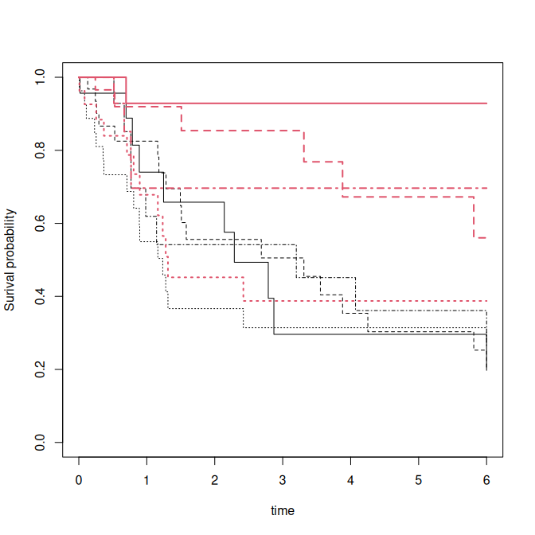
Two-stage modelling
We simulate data with a terminal event on Cox form and recurrent events satisfying the Ghosh-Lin model or having a rate on Cox form.
- type=3 is Ghosh-Lin model for recurrent events and Cox for terminal event.
- type=2 is Cox model for recurrent events among survivors and Cox for terminal event.
- simulations based on time-grid to make linear approximations of cumulative hazards
Now we fit the two-stage model (the recreg must be called with twostage=TRUE)
set.seed(100)
dr <- CPH_HPN_CRBSI$terminal
base1 <- CPH_HPN_CRBSI$crbsi
n <- 200
X <- matrix(rbinom(n*2,1,0.5),n,2)
colnames(X) <- paste("X",1:2,sep="")
###
r1 <- exp( X %*% c(0.3,-0.3))
rd <- exp( X %*% c(0.3,-0.3))
rc <- exp( X %*% c(0,0))
fz <- NULL
## type=3 is cox-cox and type=2 is Ghosh-Lin/Cox model
rr <- mets:::sim_GLcox(n,base1,dr,var.z=1,r1=r1,rd=rd,rc=rc,cens=1/5000,type=3)
dtable(rr,~statusD)
#>
#> statusD
#> 0 1 3
#> 55 375 145
rr <- cbind(rr,X[rr$id+1,])
###
out <- phreg(Event(start,stop,statusD==1)~X1+X2+cluster(id),data=rr)
outs <- phreg(Event(start,stop,statusD==3)~X1+X2+cluster(id),data=rr)
## cox/cox
tsout <- twostageREC(outs,out,data=rr)
summary(tsout)
#> Cox(recurrent)-Cox(terminal) intensity model
#>
#> 200 clusters
#> coeffients:
#> Estimate Std.Err 2.5% 97.5% P-value
#> dependence1 1.14651 0.14126 0.86964 1.42339 0
#>
#> var,shared:
#> Estimate Std.Err 2.5% 97.5% P-value
#> dependence1 1.14651 0.14126 0.86964 1.42339 0
###
rr <- mets:::sim_GLcox(n,base1,dr,var.z=1,r1=r1,rd=rd,rc=rc,fz,cens=1/5000,type=3,share=0.5)
rr <- cbind(rr,X[rr$id+1,])
###
out <- phreg(Event(start,stop,statusD==1)~X1+X2+cluster(id),data=rr)
outs <- phreg(Event(start,stop,statusD==3)~X1+X2+cluster(id),data=rr)
#
tsout <- twostageREC(outs,out,data=rr,model="shared")
summary(tsout)
#> Cox(recurrent)-Cox(terminal) intensity model
#>
#> 200 clusters
#> coeffients:
#> Estimate Std.Err 2.5% 97.5% P-value
#> dependence1 1.07333 0.14096 0.79707 1.34960 0
#> share1 0.67344 0.12832 0.42193 0.92495 0
#>
#> var,shared:
#> Estimate 2.5% 97.5%
#> dependence1 1.07333 0.79707 1.3496
#> share1 0.67344 0.42193 0.9250
###
rr <- mets:::sim_GLcox(n,base1,dr,var.z=1,r1=r1,rd=rd,rc=rc,fz,cens=1/5000,type=2)
rr <- cbind(rr,X[rr$id+1,])
outs <- phreg(Event(start,stop,statusD==3)~X1+X2+cluster(id),data=rr)
outgl <- recreg(Event(start,stop,statusD)~X1+X2+cluster(id),data=rr,twostage=TRUE,death.code=3)
##
## ghosh-lin/cox
glout <- twostageREC(outs,outgl,data=rr,theta=1)
summary(glout)
#> Ghosh-Lin(recurrent)-Cox(terminal) mean model
#>
#> 200 clusters
#> coeffients:
#> Estimate Std.Err 2.5% 97.5% P-value
#> dependence1 1.04401 0.08988 0.86785 1.22017 0
#>
#> var,shared:
#> Estimate Std.Err 2.5% 97.5% P-value
#> dependence1 1.04401 0.08988 0.86785 1.22017 0
###
glout <- twostageREC(outs,outgl,data=rr,model="shared",theta=1,nu=0.9)
summary(glout)
#> Ghosh-Lin(recurrent)-Cox(terminal) mean model
#>
#> 200 clusters
#> coeffients:
#> Estimate Std.Err 2.5% 97.5% P-value
#> dependence1 1.192629 0.094129 1.008140 1.377117 0
#> share1 1.643844 0.176676 1.297566 1.990121 0
#>
#> var,shared:
#> Estimate 2.5% 97.5%
#> dependence1 1.1926 1.0081 1.3771
#> share1 1.6438 1.2976 1.9901
glout$gradient
#> [1] -1.823718e-08 2.506173e-08Standard errors are computed assuming that the parameters of
out and outs are both known, and are therefore
probably a little too small. A bootstrap could be used to obtain more
reliable standard errors.
Simulations with specific structure
The function simGLcox can simulate data where the
recurrent process has a mean on Ghosh-Lin form. The key identity is that
\begin{align*}
E(N_1(t) | X) & = \Lambda_0(t) \exp(X^T \beta) = \int_0^t S(t|X,Z)
dR(t|X,Z)
\end{align*} where Z is a
possible frailty, so that \begin{align*}
R(t|X,Z) & = \frac{Z \Lambda_0(t) \exp(X^T \beta) }{S(t|X,Z)}
\end{align*} leads to a Ghosh-Lin model. The survival model can
be specified to have Cox form among survivors via
model="twostage"; otherwise model="frailty"
uses a survival model with rate Z \lambda_d(t)
r_d. The frailty Z is gamma
distributed with a variance that can be specified. Simulations are based
on a piecewise linear approximation of the hazard functions for S(t|X,Z) and R(t|X,Z).
n <- 100
X <- matrix(rbinom(n*2,1,0.5),n,2)
colnames(X) <- paste("X",1:2,sep="")
###
r1 <- exp( X %*% c(0.3,-0.3))
rd <- exp( X %*% c(0.3,-0.3))
rc <- exp( X %*% c(0,0))
rr <- mets:::sim_GLcox(n,base1,dr,var.z=0,r1=r1,rd=rd,rc=rc,model="twostage",cens=3/5000)
rr <- cbind(rr,X[rr$id+1,])We can also simulate from models where the terminal event is on Cox form and the rate among survivors is on Cox form.
- E(dN_1 | D>t, X) = \lambda_1(t) r_1
- E(dN_d | D>t, X) = \lambda_d(t) r_d
underlying these models we have a shared frailty model
rr <- mets:::sim_GLcox(100,base1,dr,var.z=1,r1=r1,rd=rd,rc=rc,type=3,cens=3/5000)
rr <- cbind(rr,X[rr$id+1,])
margsurv <- phreg(Surv(start,stop,statusD==3)~X1+X2+cluster(id),rr)
recurrent <- phreg(Surv(start,stop,statusD==1)~X1+X2+cluster(id),rr)
estimate(margsurv)
#> Estimate Std.Err 2.5% 97.5% P-value
#> X1 0.2535 0.2553 -0.2469 0.7538 0.3208
#> X2 -0.2595 0.2637 -0.7764 0.2574 0.3252
estimate(recurrent)
#> Estimate Std.Err 2.5% 97.5% P-value
#> X1 0.6675 0.3019 0.07583 1.25921 0.02702
#> X2 -0.4356 0.2637 -0.95247 0.08135 0.09864
par(mfrow=c(1,2));
plot(margsurv); lines(dr,col=3);
plot(recurrent); lines(base1,col=3)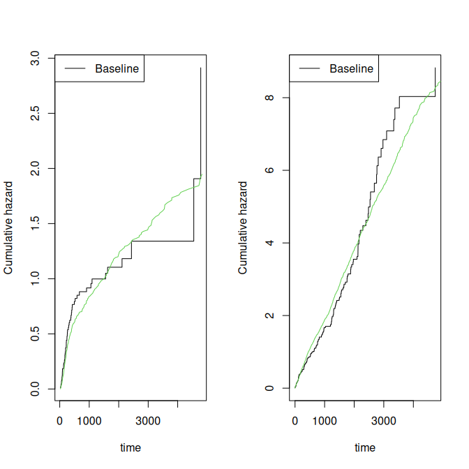
We can also simulate data with underlying dependence from the
two-stage model (simGLcox) or using
simRecurrent random effects models, for Cox-Cox or
Ghosh-Lin-Cox models.
Here with marginals on Cox-Cox and Ghosh-Lin-Cox form, drawing covariates from data:
simcoxcox <- sim_recurrent_ts(recurrent,margsurv,n=10,data=rr)
recurrentGL <- recreg(Event(start,stop,statusD)~X1+X2+cluster(id),rr,death.code=3)
simglcox <- sim_recurrent_ts(recurrentGL,margsurv,n=10,data=rr)Other marginal properties
The mean is a useful summary measure, but it is also easy and informative to examine other simple summary measures such as the probability of exceeding k events,
-
P(N_1^*(t) \ge k)
- cumulative incidence of T_{k} = \inf \{ t: N_1^*(t)=k \} with competing event D.
This is equivalent to a cumulative incidence of T_k occurring before D, denoted \hat F_k(t).
We note also that N_1^*(t)^2 can be written as \begin{align*} \sum_{k=0}^K \int_0^t I(D > s) I(N_1^*(s-)=k) f(k) dN_1^*(s) \end{align*} with f(k)=(k+1)^2 - k^2, such that its mean can be written as \begin{align*} \sum_{k=0}^K \int_0^t S(s) f(k) P(N_1^*(s-)= k | D \geq s) E( dN_1^*(s) | N_1^*(s-)=k, D> s) \end{align*} and estimated by \begin{align*} \tilde \mu_{1,2}(t) & = \sum_{k=0}^K \int_0^t \hat S(s) f(k) \frac{Y_{1\bullet}^k(s)}{Y_\bullet (s)} \frac{1}{Y_{1\bullet}^k(s)} d N_{1\bullet}^k(s)= \sum_{i=1}^n \int_0^t \hat S(s) f(N_{i1}(s-)) \frac{1}{Y_\bullet (s)} d N_{i1}(s), \end{align*} That is very similar to the “product-limit” estimator for E( (N_1^*(t))^2 ) \begin{align} \hat \mu_{1,2}(t) & = \sum_{k=0}^K k^2 ( \hat F_{k}(t) - \hat F_{k+1}(t) ). \end{align}
We use the estimator of the probability of exceeding k events based on the fact that I(N_1^*(t) \geq k) is equivalent to \begin{align*} \int_0^t I(D > s) I(N_1^*(s-)=k-1) dN_1^*(s), \end{align*} suggesting that its mean can be computed as \begin{align*} \int_0^t S(s) P(N_1^*(s-)= k-1 | D \geq s) E( dN_1^*(s) | N_1^*(s-)=k-1, D> s) \end{align*} and estimated by \begin{align*} \tilde F_k(t) = \int_0^t \hat S(s) \frac{Y_{1\bullet}^{k-1}(s)}{Y_\bullet (s)} \frac{1}{Y_{1\bullet}^{k-1}(s)} d N_{1\bullet}^{k-1}(s). \end{align*}
To compute these estimators we use the prob.exceed.recurrent function
rr <- sim_recurrentII(200,base1,base4,death.cumhaz=dr,cens=3/5000,dependence=4,var.z=1)
rr <- transform(rr,statusD=status)
rr <- dtransform(rr,statusD=3,death==1)
rr <- count_history(rr)
dtable(rr,~statusD)
#>
#> statusD
#> 0 1 2 3
#> 93 287 32 107
oo <- prob_exceed_recurrent(Event(entry,time,statusD)~cluster(id),rr,cause=1,death.code=3)
plot(oo,types=1:5)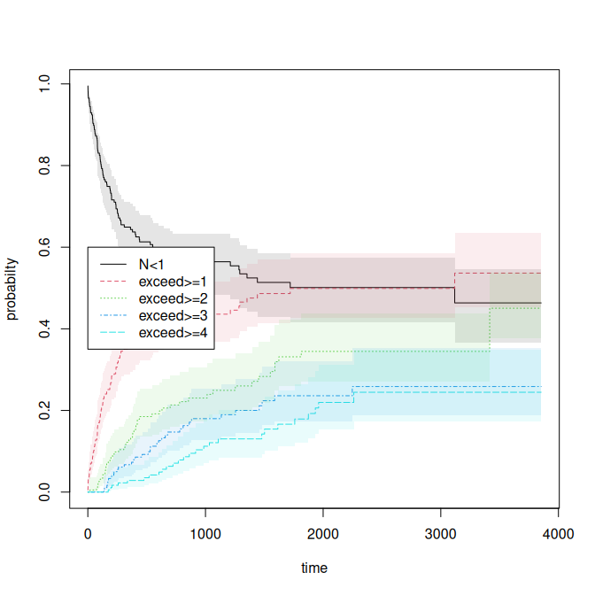
We can also look at the mean and variance based on the estimators just described
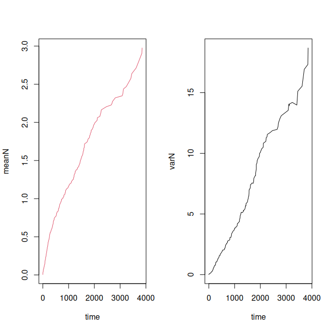
Multiple events
We now generate recurrent events data with two event types, starting with independent events.
rr <- sim_recurrentII(200,base1,cumhaz2=base4,death.cumhaz=dr)
rr <- count_history(rr)
dtable(rr,~death+status)
#>
#> status 0 1 2
#> death
#> 0 32 651 84
#> 1 168 0 0Based on this we can estimate also the joint distribution function, that is the probability that (N_1(t) \geq k_1, N_2(t) \geq k_2)
# Bivariate probability of exceeding
## oo <- prob.exceedBiRecurrent(rr,1,2,exceed1=c(1,5),exceed2=c(1,2))
## with(oo, matplot(time,pe1e2,type="s"))
## nc <- ncol(oo$pe1e2)
## legend("topleft",legend=colnames(oo$pe1e2),lty=1:nc,col=1:nc)Looking at simulations with dependence
Using normally distributed random effects we illustrate four settings. We set variance 0.5 for all random effects and vary the correlation. We denote the correlation between the random effect associated with N_1 and N_2 as \rho_{12}, and the correlation between the random effects associated with N_j and D (the terminal event) as \rho_{j3}, organised in the vector \rho=(\rho_{12},\rho_{13},\rho_{23}).
- Scenario I: \rho=(0,0.0,0.0) — independence among all effects.
data(CPH_HPN_CRBSI)
dr <- CPH_HPN_CRBSI$terminal
base1 <- CPH_HPN_CRBSI$crbsi
base4 <- CPH_HPN_CRBSI$mechanical
par(mfrow=c(1,3))
var.z <- c(0.5,0.5,0.5)
# death related to both causes in same way
cor.mat <- corM <- rbind(c(1.0, 0.0, 0.0), c(0.0, 1.0, 0.0), c(0.0, 0.0, 1.0))
rr <- sim_recurrentII(200,base1,base4,death.cumhaz=dr,var.z=var.z,cor.mat=cor.mat,dependence=2)
rr <- count_history(rr,types=1:2)
### cor(attr(rr,"z"))
### coo <- covarianceRecurrent(rr,1,2,status="status",start="entry",stop="time")
### plot(coo,main ="Scenario I")- Scenario II: \rho=(0,0.5,0.5) — independence among survivors but dependence on terminal event.
var.z <- c(0.5,0.5,0.5)
# death related to both causes in same way
cor.mat <- corM <- rbind(c(1.0, 0.0, 0.5), c(0.0, 1.0, 0.5), c(0.5, 0.5, 1.0))
rr <- sim_recurrentII(200,base1,base4,death.cumhaz=dr,var.z=var.z,cor.mat=cor.mat,dependence=2)
rr <- count_history(rr,types=1:2)
### coo <- covarianceRecurrent(rr,1,2,status="status",start="entry",stop="time")
### par(mfrow=c(1,3))
### plot(coo,main ="Scenario II")- Scenario III: \rho=(0.5,0.5,0.5) — positive dependence among survivors and dependence on terminal event.
var.z <- c(0.5,0.5,0.5)
# positive dependence for N1 and N2 all related in same way
cor.mat <- corM <- rbind(c(1.0, 0.5, 0.5), c(0.5, 1.0, 0.5), c(0.5, 0.5, 1.0))
rr <- sim_recurrentII(200,base1,base4,death.cumhaz=dr,var.z=var.z,cor.mat=cor.mat,dependence=2)
rr <- count_history(rr,types=1:2)
### coo <- covarianceRecurrent(rr,1,2,status="status",start="entry",stop="time")
### par(mfrow=c(1,3))
### plot(coo,main="Scenario III")- Scenario IV: \rho=(-0.4,0.5,0.5) — negative dependence among survivors and positive dependence on terminal event.
var.z <- c(0.5,0.5,0.5)
# negative dependence for N1 and N2 all related in same way
cor.mat <- corM <- rbind(c(1.0, -0.4, 0.5), c(-0.4, 1.0, 0.5), c(0.5, 0.5, 1.0))
rr <- sim_recurrentII(200,base1,base4,death.cumhaz=dr,var.z=var.z,cor.mat=cor.mat,dependence=2)
rr <- count_history(rr,types=1:2)
### coo <- covarianceRecurrent(rr,1,2,status="status",start="entry",stop="time")
### par(mfrow=c(1,3))
### plot(coo,main="Scenario IV")SessionInfo
sessionInfo()
#> R version 4.6.0 (2026-04-24)
#> Platform: x86_64-pc-linux-gnu
#> Running under: Ubuntu 24.04.4 LTS
#>
#> Matrix products: default
#> BLAS: /home/kkzh/.asdf/installs/r/4.6.0/lib/R/lib/libRblas.so
#> LAPACK: /usr/lib/x86_64-linux-gnu/lapack/liblapack.so.3.12.0 LAPACK version 3.12.0
#>
#> locale:
#> [1] LC_CTYPE=en_US.UTF-8 LC_NUMERIC=C
#> [3] LC_TIME=en_US.UTF-8 LC_COLLATE=en_US.UTF-8
#> [5] LC_MONETARY=en_US.UTF-8 LC_MESSAGES=en_US.UTF-8
#> [7] LC_PAPER=en_US.UTF-8 LC_NAME=C
#> [9] LC_ADDRESS=C LC_TELEPHONE=C
#> [11] LC_MEASUREMENT=en_US.UTF-8 LC_IDENTIFICATION=C
#>
#> time zone: Europe/Copenhagen
#> tzcode source: system (glibc)
#>
#> attached base packages:
#> [1] splines stats graphics grDevices utils datasets methods
#> [8] base
#>
#> other attached packages:
#> [1] timereg_2.0.7 survival_3.8-6 mets_1.3.10
#>
#> loaded via a namespace (and not attached):
#> [1] vctrs_0.7.3 cli_3.6.6 knitr_1.51
#> [4] rlang_1.2.0 xfun_0.57 KernSmooth_2.23-26
#> [7] otel_0.2.0 glue_1.8.1 future.apply_1.20.2
#> [10] listenv_0.10.1 lava_1.9.1 stats4_4.6.0
#> [13] grid_4.6.0 evaluate_1.0.5 lifecycle_1.0.5
#> [16] yaml_2.3.12 mvtnorm_1.3-7 numDeriv_2016.8-1.1
#> [19] compiler_4.6.0 codetools_0.2-20 Rcpp_1.1.1-1.1
#> [22] ucminf_1.2.3 future_1.70.0 lattice_0.22-9
#> [25] digest_0.6.39 pillar_1.11.1 parallelly_1.47.0
#> [28] parallel_4.6.0 Matrix_1.7-5 tools_4.6.0
#> [31] RcppArmadillo_15.2.6-1 globals_0.19.1